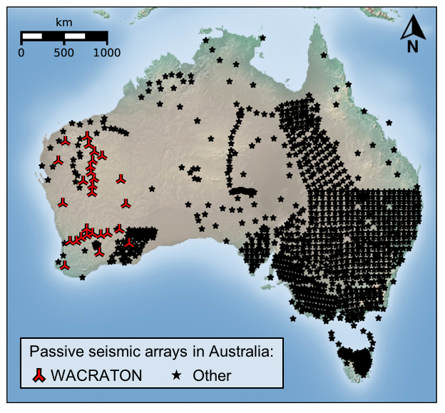

WACRATON: Seismic deployments in Western Australia 2000-2001
How to cite WA-CRATON data ?
Reference: Brian Kennett (2000): West Australian Cratons. Australian Passive Seismic Server - Australian National University. Other/Seismic Network.
Doi:
10.7914/SN/7G_2000

The WACRATON array was designed to explore the changes in the crustal structure of Western Australian cratons. The deployment of broadband instruments in 2000 - 2001 provides an improved coverage of the western part of the continent, where few geophysical investigations are carried out. Surface wave paths were used to compensate for equipment problems encountered in the later stages of the SKIPPY project. Instruments included Guralp 40T and 3ESP sensors, a STS2 sensor, and Orion and Reftek digitisers. Data was sampled at 25 samples/sec.
Funding sources: Research School of Earth Sciences, ANU
Access data
Read more about WACRATON:
- Reading, A. M., Kennett, B. L. N. and Dentith, M. C. (2003). Seismic structure of the Yilgarn Craton, Western Australia. Australian Journal of Earth Sciences, 50(3), 427-438. Doi: 10.1046/j.1440-0952.2003.01000.x
- Reading, A. M. and Kennett, B. L. N. (2003). Lithospheric structure of the Pilbara Craton, Capricorn Orogen and northern Yilgarn Craton, Western Australia, from teleseismic receiver functions. Australian Journal of Earth Sciences, 50(3), 439-445. Doi: 10.1046/j.1440-0952.2003.01003.x